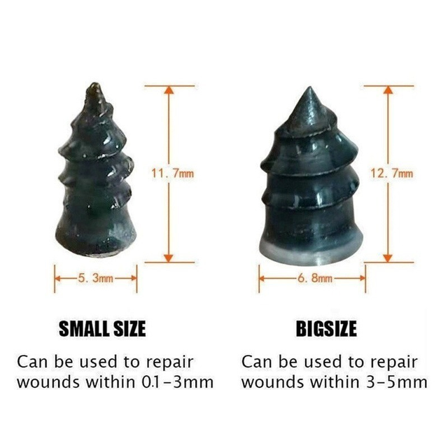
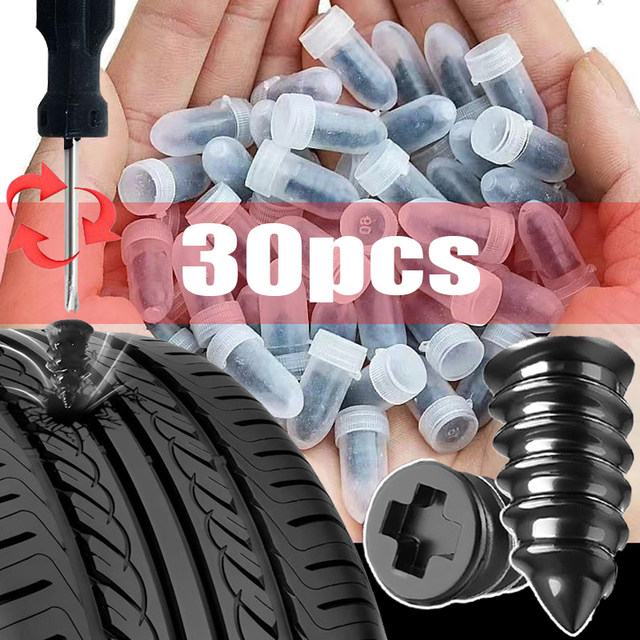
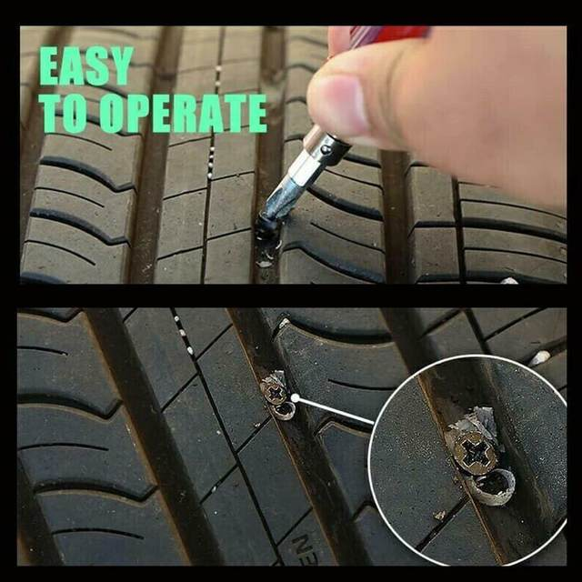
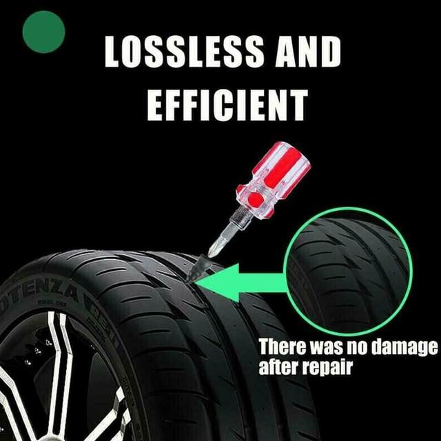
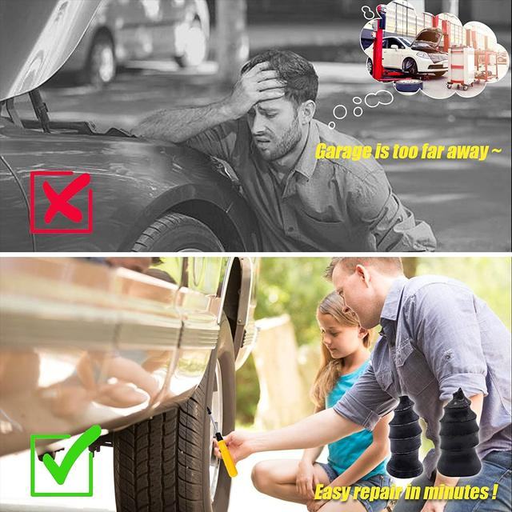

Specification:
Product name: tire repair rubber nails
Colour: Black
Purpose: Tire repair
Scope of application:
Small size: can fill up the breach within 0.1mm-3mm
Large size: can fill up the breach within 3mm-5mm
Material: Rubber
Size: Large size is about 5.3*11.7cm, small size is about 6.8*12.7cm
Describe:
1. It can fill up the gap with the inner diameter less than 5mm without damaging the tire and leaking air. Simply insert the nail into the tire wound to complete simple and efficient tire repair work.
2. It fits closely to the tire, has high connection strength and good sealing performance, prevents water from entering the wound, and prevents the steel belt from rusting and delamination.
3. Easy to operate, easy to install with this tire repair nail, repair the tire by yourself, no need to find an auto repair shop, economical and time-saving.
4. Made of high-quality rubber, it has the characteristics of high temperature resistance, high hardness and high wear resistance. It has a long service life, it can be repaired once, no second repair is required.
5. Widely used, professional puncture repair nails, can be used for automobiles, motorcycles, trucks, buses and agricultural tires.
The package includes:
10/20/30*Tire Repair Rubber Nail




